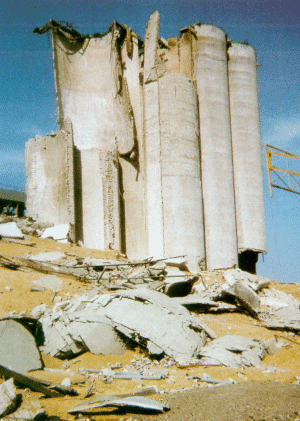

... sind explosionsfähige Gemische von Gasen, Dämpfen, Nebeln oder Stäuben mit Luft.
Die Explosionsgrenzen hängen stark vom Sauerstoffgehalt der Luft ab, weshalb Sauerstoff nicht zum Reinigen verwendet werden darf.